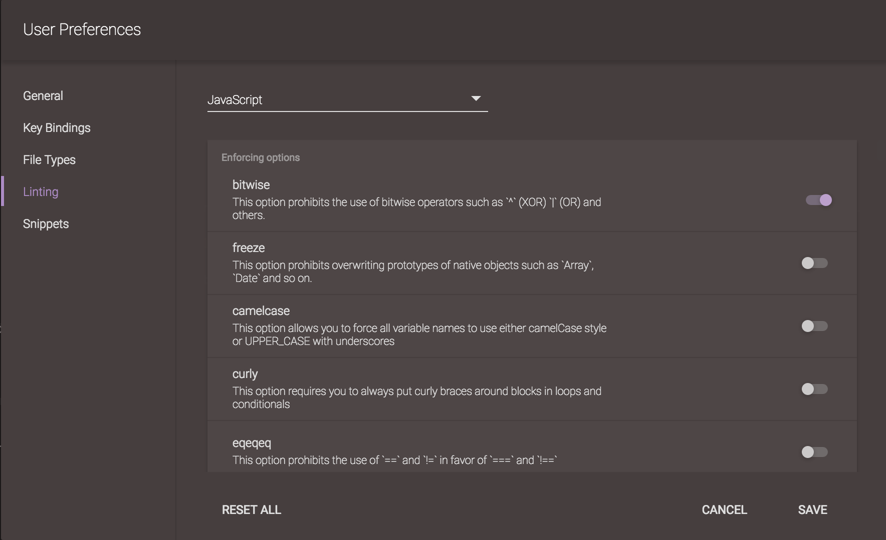

Linting
For JavaScript files, Codeanywhere provides analysis using a combination of our own analysis tools, as well as JSHint (specifically for Javascript code). Our language analysis can't detect if your program is correct, fast, nor has memory leaks, but it can save you time by spotting things like undeclared variables, syntax errors, or other preventable typos. When Codeanywhere detects an issue with your code, an icon appears in the gutter (located left from the editor) for the offending lines of code.
If you hover over any of these icons in the gutter, you'll get a pop-up that presents some information as to what, exactly, the problem is.
There are a lot of parameters in which criteria linting should be done. You can change this parameters using Linting Preferences.
Using GUI Preferences, you can set your linting preferences and when you are done, just choose "Save" option.

If you are defining preferences using JSON you must follow the Default Linting Preferences syntax which you can see at the bottom of this section.
All Default Linting Preferences:
{
/*
* JSHINT default options
* for more info check: http://jshint.com/docs/options
*/
"javascript": {
/*
* Enforcing options
* When set to true, these options will make JSHint produce more warnings about your code.
*/
/**
* This option prohibits the use of bitwise operators such as `^` (XOR),
* `|` (OR) and others. Bitwise operators are very rare in JavaScript
* programs and quite often `&` is simply a mistyped `&&`.
*/
"bitwise" : true,
/**
*
* This options prohibits overwriting prototypes of native objects such as
* `Array`, `Date` and so on.
*
* // jshint freeze:true
* Array.prototype.count = function (value) { return 4; };
* // -> Warning: Extending prototype of native object: 'Array'.
*/
"freeze" : false,
/**
* This option allows you to force all variable names to use either
* camelCase style or UPPER_CASE with underscores.
*
* @deprecated JSHint is limiting its scope to issues of code correctness.
* If you would like to enforce rules relating to code style,
* check out [the JSCS
* project](https://github.com/jscs-dev/node-jscs).
*/
"camelcase" : false,
/**
* This option requires you to always put curly braces around blocks in
* loops and conditionals. JavaScript allows you to omit curly braces when
* the block consists of only one statement, for example:
*
* while (day)
* shuffle();
*
* However, in some circumstances, it can lead to bugs (you'd think that
* `sleep()` is a part of the loop while in reality it is not):
*
* while (day)
* shuffle();
* sleep();
*/
"curly" : false,
/**
* This options prohibits the use of `==` and `!=` in favor of `===` and
* `!==`. The former try to coerce values before comparing them which can
* lead to some unexpected results. The latter don't do any coercion so
* they are generally safer. If you would like to learn more about type
* coercion in JavaScript, we recommend [Truth, Equality and
* JavaScript](http://javascriptweblog.wordpress.com/2011/02/07/truth-equality-and-javascript/)
* by Angus Croll.
*/
"eqeqeq" : false,
/**
* This option enables warnings about the use of identifiers which are
* defined in future versions of JavaScript. Although overwriting them has
* no effect in contexts where they are not implemented, this practice can
* cause issues when migrating codebases to newer versions of the language.
*/
"futurehostile": false,
/**
* This option suppresses warnings about invalid `typeof` operator values.
* This operator has only [a limited set of possible return
* values](https://developer.mozilla.org/en-US/docs/Web/JavaScript/Reference/Operators/typeof).
* By default, JSHint warns when you compare its result with an invalid
* value which often can be a typo.
*
* // 'fuction' instead of 'function'
* if (typeof a == "fuction") { // Invalid typeof value 'fuction'
* // ...
* }
*
* Do not use this option unless you're absolutely sure you don't want
* these checks.
*/
"notypeof" : true,
/**
* This option tells JSHint that your code needs to adhere to ECMAScript 3
* specification. Use this option if you need your program to be executable
* in older browsers—such as Internet Explorer 6/7/8/9—and other legacy
* JavaScript environments.
*/
"es3" : false,
/**
* This option enables syntax first defined in [the ECMAScript 5.1
* specification](http://es5.github.io/). This includes allowing reserved
* keywords as object properties.
*/
"es5" : false,
/**
* This option requires all `for in` loops to filter object's items. The
* for in statement allows for looping through the names of all of the
* properties of an object including those inherited through the prototype
* chain. This behavior can lead to unexpected items in your object so it
* is generally safer to always filter inherited properties out as shown in
* the example:
*
* for (key in obj) {
* if (obj.hasOwnProperty(key)) {
* // We are sure that obj[key] belongs to the object and was not inherited.
* }
* }
*
* For more in-depth understanding of `for in` loops in JavaScript, read
* [Exploring JavaScript for-in
* loops](http://javascriptweblog.wordpress.com/2011/01/04/exploring-javascript-for-in-loops/)
* by Angus Croll.
*/
"forin" : false,
/**
* This option suppresses warnings about declaring variables inside of
* control
* structures while accessing them later from the outside. Even though
* JavaScript has only two real scopes—global and function—such practice
* leads to confusion among people new to the language and hard-to-debug
* bugs. This is why, by default, JSHint warns about variables that are
* used outside of their intended scope.
*
* function test() {
* if (true) {
* var x = 0;
* }
*
* x += 1; // Default: 'x' used out of scope.
* // No warning when funcscope:true
* }
*/
"funcscope" : false,
/**
* This option prohibits the use of immediate function invocations without
* wrapping them in parentheses. Wrapping parentheses assists readers of
* your code in understanding that the expression is the result of a
* function, and not the function itself.
*
* @deprecated JSHint is limiting its scope to issues of code correctness.
* If you would like to enforce rules relating to code style,
* check out [the JSCS
* project](https://github.com/jscs-dev/node-jscs).
*/
"immed" : false,
/**
* This option suppresses warnings about the `__iterator__` property. This
* property is not supported by all browsers so use it carefully.
*/
"iterator" : false,
/**
* This option requires you to capitalize names of constructor functions.
* Capitalizing functions that are intended to be used with `new` operator
* is just a convention that helps programmers to visually distinguish
* constructor functions from other types of functions to help spot
* mistakes when using `this`.
*
* Not doing so won't break your code in any browsers or environments but
* it will be a bit harder to figure out—by reading the code—if the
* function was supposed to be used with or without new. And this is
* important because when the function that was intended to be used with
* `new` is used without it, `this` will point to the global object instead
* of a new object.
*
* @deprecated JSHint is limiting its scope to issues of code correctness.
* If you would like to enforce rules relating to code style,
* check out [the JSCS
* project](https://github.com/jscs-dev/node-jscs).
*/
"newcap" : false,
/**
* This option prohibits the use of `arguments.caller` and
* `arguments.callee`. Both `.caller` and `.callee` make quite a few
* optimizations impossible so they were deprecated in future versions of
* JavaScript. In fact, ECMAScript 5 forbids the use of `arguments.callee`
* in strict mode.
*/
"noarg" : false,
/**
* This option prohibits the use of the comma operator. When misused, the
* comma operator can obscure the value of a statement and promote
* incorrect code.
*/
"nocomma" : false,
/**
* This option warns when you have an empty block in your code. JSLint was
* originally warning for all empty blocks and we simply made it optional.
* There were no studies reporting that empty blocks in JavaScript break
* your code in any way.
*
* @deprecated JSHint is limiting its scope to issues of code correctness.
* If you would like to enforce rules relating to code style,
* check out [the JSCS
* project](https://github.com/jscs-dev/node-jscs).
*/
"noempty" : false,
/**
* This option warns about "non-breaking whitespace" characters. These
* characters can be entered with option-space on Mac computers and have a
* potential of breaking non-UTF8 web pages.
*/
"nonbsp" : false,
/**
* This option prohibits the use of constructor functions for side-effects.
* Some people like to call constructor functions without assigning its
* result to any variable:
*
* new MyConstructor();
*
* There is no advantage in this approach over simply calling
* `MyConstructor` since the object that the operator `new` creates isn't
* used anywhere so you should generally avoid constructors like this one.
*/
"nonew" : false,
/**
* This option prohibits the use of explicitly undeclared variables. This
* option is very useful for spotting leaking and mistyped variables.
*
* // jshint undef:true
*
* function test() {
* var myVar = 'Hello, World';
* console.log(myvar); // Oops, typoed here. JSHint with undef will complain
* }
*
* If your variable is defined in another file, you can use the `global`
* directive to tell JSHint about it.
*/
"undef" : false,
/**
* This option prohibits the use of the grouping operator when it is not
* strictly required. Such usage commonly reflects a misunderstanding of
* unary operators, for example:
*
* // jshint singleGroups: true
*
* delete(obj.attr); // Warning: Unnecessary grouping operator.
*/
"singleGroups": false,
/**
* This option requires all functions to run in ECMAScript 5's strict mode.
* [Strict mode](https://developer.mozilla.org/en/JavaScript/Strict_mode)
* is a way to opt in to a restricted variant of JavaScript. Strict mode
* eliminates some JavaScript pitfalls that didn't cause errors by changing
* them to produce errors. It also fixes mistakes that made it difficult
* for the JavaScript engines to perform certain optimizations.
*
* *Note:* This option enables strict mode for function scope only. It
* *prohibits* the global scoped strict mode because it might break
* third-party widgets on your page. If you really want to use global
* strict mode, see the *globalstrict* option.
*/
"strict" : false,
/**
* When set to true, the use of VariableStatements are forbidden.
* For example:
*
* // jshint varstmt: true
*
* var a; // Warning: `var` declarations are forbidden. Use `let` or `const` instead.
*/
"varstmt": false,
/**
* This option is a short hand for the most strict JSHint configuration as
* available in JSHint version 2.6.3. It enables all enforcing options and
* disables all relaxing options that were defined in that release.
*
* @deprecated The option cannot be maintained without automatically opting
* users in to new features. This can lead to unexpected
* warnings/errors in when upgrading between minor versions of
* JSHint.
*/
"enforceall" : false,
/**
* This option lets you set the maximum length of a line.
*
* @deprecated JSHint is limiting its scope to issues of code correctness. If
* you would like to enforce rules relating to code style, check
* out [the JSCS project](https://github.com/jscs-dev/node-jscs).
*/
"maxlen" : false,
/**
* This option sets a specific tab width for your code.
*
* @deprecated JSHint is limiting its scope to issues of code correctness. If
* you would like to enforce rules relating to code style, check
* out [the JSCS project](https://github.com/jscs-dev/node-jscs).
*/
"indent" : false,
/**
* This options allows you to set the maximum amount of warnings JSHint will
* produce before giving up. Default is 50.
*/
"maxerr" : false,
"predef" : false, // predef is deprecated and being replaced by globals
/**
* This option can be used to specify a white list of global variables that
* are not formally defined in the source code. This is most useful when
* combined with the `undef` option in order to suppress warnings for
* project-specific global variables.
*
* Setting an entry to `true` enables reading and writing to that variable.
* Setting it to `false` will trigger JSHint to consider that variable
* read-only.
*
* See also the "environment" options: a set of options to be used as short
* hand for enabling global variables defined in common JavaScript
* environments.
*/
"globals" : false,
/**
* This option enforces the consistency of quotation marks used throughout
* your code. It accepts three values: `true` if you don't want to enforce
* one particular style but want some consistency, `"single"` if you want to
* allow only single quotes and `"double"` if you want to allow only double
* quotes.
*
* @deprecated JSHint is limiting its scope to issues of code correctness. If
* you would like to enforce rules relating to code style, check
* out [the JSCS project](https://github.com/jscs-dev/node-jscs).
*/
"quotmark" : false,
"scope" : false,
/**
* This option lets you set the max number of statements allowed per function:
*
* // jshint maxstatements:4
*
* function main() {
* var i = 0;
* var j = 0;
*
* // Function declarations count as one statement. Their bodies
* // don't get taken into account for the outer function.
* function inner() {
* var i2 = 1;
* var j2 = 1;
*
* return i2 + j2;
* }
*
* j = i + j;
* return j; // JSHint: Too many statements per function. (5)
* }
*/
"maxstatements": false,
/**
* This option lets you control how nested do you want your blocks to be:
*
* // jshint maxdepth:2
*
* function main(meaning) {
* var day = true;
*
* if (meaning === 42) {
* while (day) {
* shuffle();
*
* if (tired) { // JSHint: Blocks are nested too deeply (3).
* sleep();
* }
* }
* }
* }
*/
"maxdepth" : false,
/**
* This option lets you set the max number of formal parameters allowed per
* function:
*
* // jshint maxparams:3
*
* function login(request, onSuccess) {
* // ...
* }
*
* // JSHint: Too many parameters per function (4).
* function logout(request, isManual, whereAmI, onSuccess) {
* // ...
* }
*/
"maxparams" : false,
/**
* This option lets you control cyclomatic complexity throughout your code.
* Cyclomatic complexity measures the number of linearly independent paths
* through a program's source code. Read more about [cyclomatic complexity on
* Wikipedia](http://en.wikipedia.org/wiki/Cyclomatic_complexity).
*/
"maxcomplexity": false,
/**
* This option suppresses warnings about variable shadowing i.e. declaring a
* variable that had been already declared somewhere in the outer scope.
*
* - "inner" - check for variables defined in the same scope only
* - "outer" - check for variables defined in outer scopes as well
* - false - same as inner
* - true - allow variable shadowing
*/
"shadow" : false,
/**
* This option warns when you define and never use your variables. It is very
* useful for general code cleanup, especially when used in addition to
* `undef`.
*
* // jshint unused:true
*
* function test(a, b) {
* var c, d = 2;
*
* return a + d;
* }
*
* test(1, 2);
*
* // Line 3: 'b' was defined but never used.
* // Line 4: 'c' was defined but never used.
*
* In addition to that, this option will warn you about unused global
* variables declared via the `global` directive.
*
* This can be set to `vars` to only check for variables, not function
* parameters, or `strict` to check all variables and parameters. The
* default (true) behavior is to allow unused parameters that are followed by
* a used parameter.
*/
"unused" : false,
/**
* This option prohibits the use of a variable before it was defined.
* JavaScript has function scope only and, in addition to that, all variables
* are always moved—or hoisted— to the top of the function. This behavior can
* lead to some very nasty bugs and that's why it is safer to always use
* variable only after they have been explicitly defined.
*
* Setting this option to "nofunc" will allow function declarations to be
* ignored.
*
* For more in-depth understanding of scoping and hoisting in JavaScript,
* read [JavaScript Scoping and
* Hoisting](http://www.adequatelygood.com/2010/2/JavaScript-Scoping-and-Hoisting)
* by Ben Cherry.
*/
"latedef" : "nofunc",
"ignore" : false, // start/end ignoring lines of code, bypassing the lexer
// start - start ignoring lines, including the current line
// end - stop ignoring lines, starting on the next line
// line - ignore warnings / errors for just a single line
// (this option does not bypass the lexer)
"ignoreDelimiters": false, // array of start/end delimiters used to ignore
// certain chunks from code
/*
* Relaxing options
* When set to true, these options will make JSHint produce fewer warnings about your code.
*/
/**
* This option suppresses warnings about missing semicolons. There is a lot
* of FUD about semicolon spread by quite a few people in the community.
* The common myths are that semicolons are required all the time (they are
* not) and that they are unreliable. JavaScript has rules about semicolons
* which are followed by *all* browsers so it is up to you to decide
* whether you should or should not use semicolons in your code.
*
* For more information about semicolons in JavaScript read [An Open Letter
* to JavaScript Leaders Regarding
* Semicolons](http://blog.izs.me/post/2353458699/an-open-letter-to-javascript-leaders-regarding)
* by Isaac Schlueter and [JavaScript Semicolon
* Insertion](http://inimino.org/~inimino/blog/javascript_semicolons).
*/
"asi" : true,
/**
* This option suppresses warnings about multi-line strings. Multi-line
* strings can be dangerous in JavaScript because all hell breaks loose if
* you accidentally put a whitespace in between the escape character (`\`)
* and a new line.
*
* Note that even though this option allows correct multi-line strings, it
* still warns about multi-line strings without escape characters or with
* anything in between the escape character and a whitespace.
*
* // jshint multistr:true
*
* var text = "Hello\
* World"; // All good.
*
* text = "Hello
* World"; // Warning, no escape character.
*
* text = "Hello\
* World"; // Warning, there is a space after \
*
* @deprecated JSHint is limiting its scope to issues of code correctness.
* If you would like to enforce rules relating to code style,
* check out [the JSCS
* project](https://github.com/jscs-dev/node-jscs).
*/
"multistr" : true,
/**
* This option suppresses warnings about the `debugger` statements in your
* code.
*/
"debug" : false,
/**
* This option suppresses warnings about the use of assignments in cases
* where comparisons are expected. More often than not, code like `if (a =
* 10) {}` is a typo. However, it can be useful in cases like this one:
*
* for (var i = 0, person; person = people[i]; i++) {}
*
* You can silence this error on a per-use basis by surrounding the assignment
* with parenthesis, such as:
*
* for (var i = 0, person; (person = people[i]); i++) {}
*/
"boss" : false,
/**
* This option suppresses warnings about the use of `eval`. The use of
* `eval` is discouraged because it can make your code vulnerable to
* various injection attacks and it makes it hard for JavaScript
* interpreter to do certain optimizations.
*/
"evil" : false,
/**
* This option suppresses warnings about the use of global strict mode.
* Global strict mode can break third-party widgets so it is not
* recommended.
*
* For more info about strict mode see the `strict` option.
*/
"globalstrict": false,
/**
* This option prohibits the use of unary increment and decrement
* operators. Some people think that `++` and `--` reduces the quality of
* their coding styles and there are programming languages—such as
* Python—that go completely without these operators.
*/
"plusplus" : false,
/**
* This option suppresses warnings about the `__proto__` property.
*/
"proto" : true,
/**
* This option suppresses warnings about the use of script-targeted
* URLs—such as `javascript:...`.
*/
"scripturl" : true,
/**
* This option suppresses warnings about using `[]` notation when it can be
* expressed in dot notation: `person['name']` vs. `person.name`.
*
* @deprecated JSHint is limiting its scope to issues of code correctness.
* If you would like to enforce rules relating to code style,
* check out [the JSCS
* project](https://github.com/jscs-dev/node-jscs).
*/
"sub" : false,
/**
* This option suppresses warnings about "weird" constructions like
* `new function () { ... }` and `new Object;`. Such constructions are
* sometimes used to produce singletons in JavaScript:
*
* var singleton = new function() {
* var privateVar;
*
* this.publicMethod = function () {}
* this.publicMethod2 = function () {}
* };
*/
"supernew" : false,
/**
* This option suppresses most of the warnings about possibly unsafe line
* breakings in your code. It doesn't suppress warnings about comma-first
* coding style. To suppress those you have to use `laxcomma` (see below).
*
* @deprecated JSHint is limiting its scope to issues of code correctness.
* If you would like to enforce rules relating to code style,
* check out [the JSCS
* project](https://github.com/jscs-dev/node-jscs).
*/
"laxbreak" : false,
/**
* This option suppresses warnings about comma-first coding style:
*
* var obj = {
* name: 'Anton'
* , handle: 'valueof'
* , role: 'SW Engineer'
* };
*
* @deprecated JSHint is limiting its scope to issues of code correctness.
* If you would like to enforce rules relating to code style,
* check out [the JSCS
* project](https://github.com/jscs-dev/node-jscs).
*/
"laxcomma" : true,
/**
* This option suppresses warnings about possible strict violations when
* the code is running in strict mode and you use `this` in a
* non-constructor function. You should use this option—in a function scope
* only—when you are positive that your use of `this` is valid in the
* strict mode (for example, if you call your function using
* `Function.call`).
*
* **Note:** This option can be used only inside of a function scope.
* JSHint will fail with an error if you will try to set this option
* globally.
*/
"validthis" : true,
/**
* This option suppresses warnings about the use of the `with` statement.
* The semantics of the `with` statement can cause confusion among
* developers and accidental definition of global variables.
*
* More info:
*
* * [with Statement Considered
* Harmful](http://yuiblog.com/blog/2006/04/11/with-statement-considered-harmful/)
*/
"withstmt" : true,
/**
* This options tells JSHint that your code uses Mozilla JavaScript
* extensions. Unless you develop specifically for the Firefox web browser
* you don't need this option.
*
* More info:
*
* * [New in JavaScript
* 1.7](https://developer.mozilla.org/en-US/docs/JavaScript/New_in_JavaScript/1.7)
*/
"moz" : false,
/**
* This option suppresses warnings about generator functions with no
* `yield` statement in them.
*/
"noyield" : true,
/**
* This option suppresses warnings about `== null` comparisons. Such
* comparisons are often useful when you want to check if a variable is
* `null` or `undefined`.
*/
"eqnull" : true,
/**
* This option suppresses warnings about missing semicolons, but only when
* the semicolon is omitted for the last statement in a one-line block:
*
* var name = (function() { return 'Anton' }());
*
* This is a very niche use case that is useful only when you use automatic
* JavaScript code generators.
*/
"lastsemic" : false,
/**
* This option suppresses warnings about functions inside of loops.
* Defining functions inside of loops can lead to bugs such as this one:
*
* var nums = [];
*
* for (var i = 0; i < 10; i++) {
* nums[i] = function (j) {
* return i + j;
* };
* }
*
* nums[0](2); // Prints 12 instead of 2
*
* To fix the code above you need to copy the value of `i`:
*
* var nums = [];
*
* for (var i = 0; i < 10; i++) {
* (function (i) {
* nums[i] = function (j) {
* return i + j;
* };
* }(i));
* }
*/
"loopfunc" : true,
/**
* This option suppresses warnings about the use of expressions where
* normally you would expect to see assignments or function calls. Most of
* the time, such code is a typo. However, it is not forbidden by the spec
* and that's why this warning is optional.
*/
"expr" : true,
/**
* This option tells JSHint that your code uses ECMAScript 6 specific
* syntax. Note that these features are not finalized yet and not all
* browsers implement them.
*
* More info:
*
* * [Draft Specification for ES.next (ECMA-262 Ed.
* 6)](http://wiki.ecmascript.org/doku.php?id=harmony:specification_drafts)
*/
"esnext" : true,
/**
* This option tells JSHint that your code uses ES3 array elision elements,
* or empty elements (for example, `[1, , , 4, , , 7]`).
*/
"elision" : true,
/*
* Environments
* These options let JSHint know about some pre-defined global variables.
*/
/**
* This option defines globals exposed by the
* [MooTools](http://mootools.net/) JavaScript framework.
*/
"mootools" : true,
/**
* This option defines globals exposed by
* [CouchDB](http://couchdb.apache.org/). CouchDB is a document-oriented
* database that can be queried and indexed in a MapReduce fashion using
* JavaScript.
*/
"couch" : true,
/**
* This option defines globals exposed by [the Jasmine unit testing
* framework](https://jasmine.github.io/).
*/
"jasmine" : true,
/**
* This option defines globals exposed by the [jQuery](http://jquery.com/)
* JavaScript library.
*/
"jquery" : true,
/**
* This option defines globals available when your code is running inside
* of the Node runtime environment. [Node.js](http://nodejs.org/) is a
* server-side JavaScript environment that uses an asynchronous
* event-driven model. This option also skips some warnings that make sense
* in the browser environments but don't make sense in Node such as
* file-level `use strict` pragmas and `console.log` statements.
*/
"node" : true,
/**
* This option defines globals exposed by [the QUnit unit testing
* framework](http://qunitjs.com/).
*/
"qunit" : true,
/**
* This option defines globals available when your code is running inside
* of the Rhino runtime environment. [Rhino](http://www.mozilla.org/rhino/)
* is an open-source implementation of JavaScript written entirely in Java.
*/
"rhino" : true,
/**
* This option defines globals exposed by [the ShellJS
* library](http://documentup.com/arturadib/shelljs).
*/
"shelljs" : true,
/**
* This option defines globals exposed by the
* [Prototype](http://www.prototypejs.org/) JavaScript framework.
*/
"prototypejs" : true,
/**
* This option defines globals exposed by the [YUI](http://yuilibrary.com/)
* JavaScript framework.
*/
"yui" : true,
/**
* This option defines globals exposed by the "BDD" and "TDD" UIs of the
* [Mocha unit testing framework](http://mochajs.org/).
*/
"mocha" : true,
/**
* This option informs JSHint that the input code describes an ECMAScript 6
* module. All module code is interpreted as strict mode code.
*/
"module" : false,
/**
* This option defines globals available when your code is running as a
* script for the [Windows Script
* Host](http://en.wikipedia.org/wiki/Windows_Script_Host).
*/
"wsh" : true,
/**
* This option defines globals available when your code is running inside
* of a Web Worker. [Web
* Workers](https://developer.mozilla.org/en/Using_web_workers) provide a
* simple means for web content to run scripts in background threads.
*/
"worker" : true,
/**
* This option defines non-standard but widely adopted globals such as
* `escape` and `unescape`.
*/
"nonstandard" : true,
/**
* This option defines globals exposed by modern browsers: all the way from
* good old `document` and `navigator` to the HTML5 `FileReader` and other
* new developments in the browser world.
*
* **Note:** This option doesn't expose variables like `alert` or
* `console`. See option `devel` for more information.
*/
"browser" : true,
/**
* This option defines globals available when using [the Browserify
* tool](http://browserify.org/) to build a project.
*/
"browserify" : true,
/**
* This option defines globals that are usually used for logging poor-man's
* debugging: `console`, `alert`, etc. It is usually a good idea to not
* ship them in production because, for example, `console.log` breaks in
* legacy versions of Internet Explorer.
*/
"devel" : true,
/**
* This option defines globals exposed by the [Dojo
* Toolkit](http://dojotoolkit.org/).
*/
"dojo" : true,
/**
* This option defines globals for typed array constructors.
*
* More info:
*
* * [JavaScript typed
* arrays](https://developer.mozilla.org/en-US/docs/Web/JavaScript/Typed_arrays)
*/
"typed" : true,
/**
* This option defines globals available when your core is running inside
* of the PhantomJS runtime environment. [PhantomJS](http://phantomjs.org/)
* is a headless WebKit scriptable with a JavaScript API. It has fast and
* native support for various web standards: DOM handling, CSS selector,
* JSON, Canvas, and SVG.
*/
"phantom" : true
}
}